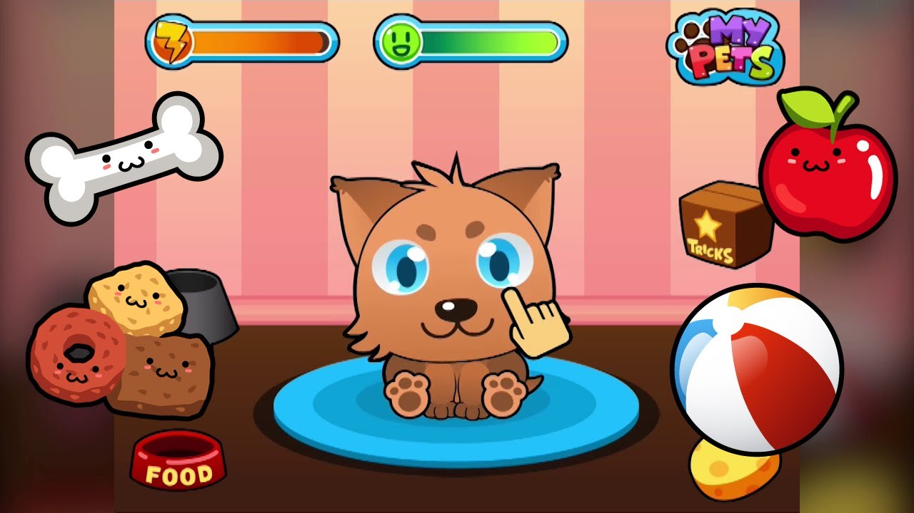

The following skills and technologies were used to successfully carry out the project; coding, java, eclipse, git-bash, git-hub,and gradle.
For more information I can be reached at the following contacts:
Below are descriptions of various projects that I did. For deeper understanding what the project is about, you can click the hyperlink (below the project's name) which will direct you to the specific web page where the project is being hosted.
The following skills and technologies were used to successfully carry out the project; coding, java, eclipse, git-bash, git-hub,and gradle.
The following skills and technologies were used to successfully carry out the project; TDD, collections, coding, java, eclipse, git-bash, git-hub,and gradle.
The following skills and technologies were used to successfully carry out the project; html, css, TDD, spring boot, coding, java, eclipse, git-bash, git-hub, and gradle.